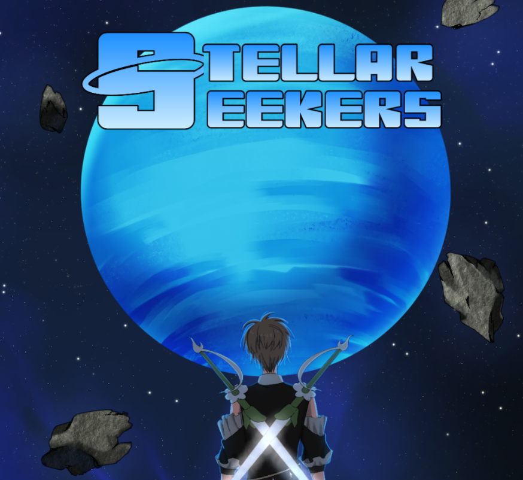

Stellar Seekers

Cari informasi ability/trait beserta tier dan efeknya. Klik kartu untuk melihat deskripsi lengkap.
Memuat info sumber data...
Memuat data trait...
Trait tidak ditemukan.
Memuat data rules & mechanics...